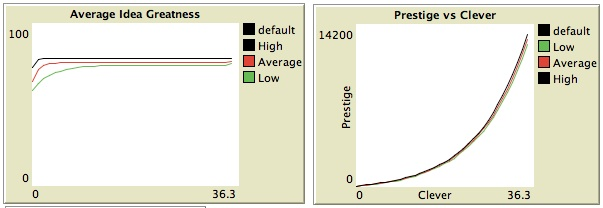

Eureka! Academic Research Projects in a Rugged Landscape
Pantelis Pipergias Analytis Jean Clipperton
Assumptions & Motivation
Academics seek research projects to match certain preferences, skills and talents. As graduate students transition to junior faculty positions, the pressure to publish (or perish!) increases, never completely disappearing. Thus, researchers must locate compatible (and potentially significant) projects quickly. The model considers scholars who search for interesting projects that will help advance knowledge in their field or discipline while simultaneously increasing the potential for the scholar herself to improve her abilities and scholarly opportunities.
Assumptions
We begin by representing the idea space, where academics search for ideas, as a rugged terrain. Some ideas are better than others, which are represented by lighter regions. We assume that academics have a preference for some types ideas over others, that they will be more likely to search near this preference space, and that their ability to search will vary across individuals.
Model
We include five variables, four of which can be directly determined by the modeler: smoothness of the space, number of researchers, cleverness of the academic, the rate of exploitation of ideas, and the regrowth/decline of non-researched topics. We discuss each of these in depth below.
Setup/Initialization
Academics are distributed randomly across the idea space; this placement represents their initial interests. Their preferences may include ‘better’ or ‘worse’ ideas and scholars will search for better ideas using a simple search algorithm that compares their current position to nearby ideas. The academics search within a small radius of their current position where the length of the radius is equal to how clever the researchers are. Cleverness is drawn from a left-censored normal distribution centered at 5 with a standard deviation of 2.5. The smallest value we permit is 1 (otherwise, agents would get stuck at their current location) but there is no upper bound on the distribution. We included cleverness because a variation in ability to locate (and pursue) research topics varies within populations and we wanted to capture that in our model. In the future, there may be other ways to develop cleverness and search ability (as discussed in the extension section) but this works well as a first approximation of the variation.
After their search, researchers ultimately locate a research topic or project. As more researchers approach the project, the return these academics derive will be exploited at a rate set by the modeler. The higher the rate of exploitation, the sooner researchers will begin looking for better ideas as the popularity of the current idea fades. In the current model, the rate of exploitation is uniformly set across the population so all ideas have the same context-dependent formula for decay, given below.
ask patches [set fitness fitness + rate-of-exploitation * change
ifelse (count turtles-on neighbors + count turtles-here > 1 )
[set change (-1 * count turtles-on neighbors - count turtles-here ) ]
[set change random-normal 0 30 ] ]
The greatness of an idea changes dependent upon the exogenously determined rate of exploitation (or decay), and the number of researchers currently active on that project. For those ideas that are not in development, there is random regrowth that happens at a rate similar to the rate of decay (so that the faster ideas are ‘used up’ the faster new ones may appear). This regrowth pattern is not necessarily realistic in particular because the regrowth is random (although the randomness may mimic the new hot areas that burst on the scene or new methodological techniques). Future versions of the model might incorporate directed growth--for example if the axes of the idea space were to refer to content and methodological types, then we might imagine new ‘frontiers’ for ideas that emerge dependent upon previous research and results. Still, our simple rate of exploitation does allow for variation in idea ‘depletion’ and regeneration. Additionally, while this regrowth or decline is not directly determined by the modeler, the equation depends upon the user-set rate of exogenous change, so the modeler has indirect control. This might be included as an additional user control in future versions of the model.
The image below displays the initialization of the model with 300 academics distributed in the search space. The lighter areas are more fertile research ideas while the darker spaces are academic ‘dead zones’. Users can determine the relative topology of the space by determining the ‘smoothness’ of the space. A smoother topology has fewer peaks with broader potential idea zones for profitable development. The less smooth a topology, the more peaks that exist and the sharper the contrast between a ‘good’ and ‘less good’ idea. Smoother spaces could represent different disciplines, where there are broad categories and many research agendas available in each while the more rugged terrains could represent a divided or highly segmented discipline with little room for collaboration and integration of ideas. The two figures below illustrate the difference in terrain: the first figure has a smoothness of 16 while the second’s smoothness is 50.
Over time, agents continue to develop their research agendas by contributing to existing ideas (often collaborating with other scholars) and by leaving current projects for more lucrative research topics. The image below shows the topology after 1,000 runs when exploitation was high (0.95) and there was no birth or death of researchers. There are still some areas where no one researches (the dark spaces at the bottom left of the space) while there are many profitable ideas being explored (and some yet to be explored).

Results
The agents start immediately hill climbing in the academic landscape looking for better research opportunities. Groups of researchers move to the same local optima and start exploiting them. Several agents tend to cluster on the same picks something that could stand for a concentration of research in different disciplines, domains or experimental paradigms.
With time the shape of the academic landscape evolves. The peaks of the landscape are smoothed while academic inquiry simultaneously generates new opportunities in different regions of the landscape. The agents are responsive to those landscape alterations and they immigrate to new regions of the landscape as soon as a patch in their surroundings has acquired a higher fitness value than the one they are currently standing on. Those academic immigrations are led by the agents with the highest cleverness variables. This is a result of their ability to look farther away in the academic landscape. An immediate consequence is that clever individuals tend to work on average on projects with a higher average idea greatness. This has also an impact on the overall prestige accumulated by the various individuals.

The dynamics of the system, the average idea greatness and the accumulated prestige vary more when old agents leave the academic sphere and new-born agents replace them in random locations in the landscape.

Future Work, If Onlys
The model could be modified to allow us to account for several other phenomena encountered in the academic world. It would be interesting to change our agents’ search rules. Some individuals may have the potential to explore patches that are not in their immediate surroundings. The ability to search farther away in the space could correspond to academics who have the potential for interdisciplinary collaborations and cross-fertilize research in several academic fields. Examples of such scientists could be Von Neumann and Erdos. In fact many of the scientists working at Santa Fe institute may very well fall into that category.
Secondly, we would like to give more substance in the variable of prestige. Ideally prestige would correspond to the number of citations or the impact of an agent. Thus, it would be interesting to introduce returns to originality. Individuals moving relatively early on a patch should be receiving comparatively more prestige than individuals that reach the patch later. In terms of programming this could be implemented with a pyramid reward structure. in such a structure, the agents who arrive earlier on a patch would receive additional prestige from the agents arriving on the same research patch later in time.
On the basis of the prestige variable we could program interesting social dynamics. In this version of the model the agents would not be only comparing the fitness of the various patches. In contrast they will also examine the prestige of the agents working on a particular research topic. In this sense the landscape will have both an objective research fitness variable and a subjective one. These fitness variables will incorporate the expected returns of a patch and a social cue corresponding to prestige. In a boundary condition some agents may not have direct access to the fitness variable of the patches but may only be able to observe the prestige of the people working on different regions of the landscape. We would expect that this format would generate suggestive leader, follower dynamics.
Our model was envisioned as a general conceptual framework that could be applied across domains. Therefore, it may be silent in regards to the dynamics emerging in particular disciplines. Characteristically, the research dynamics in theoretical fields such as Mathematics may be very different from those encountered in sciences like Sociology or Psychology. To tackle phenomena emerging in various disciplines or research domains one could built into the model disciplinary constraints. However some initial setup combinations may created to represent specific disciplines or content areas. Examples of such constraints can be the significance of prestige, the speed and the directions in which the landscape is recreated as well as the birth and death and in particular the patches at which new researchers come into research.
Other Applications
While the model has been inspired by models in behavioral ecology it could be readily applied to further domains in social sciences. Examples could be the development of new technological innovations or patents, institutional adaptation for voter support1, or the development of business niches in markets. The rate of idea exploitation could easily be inverted to represent idea, product or market growth. As new agents move to a market, they fight to maintain a share of the market and to develop a signature brand and domain. The key elements of the model are the difference between the quality of the good and the ability of seekers to identify higher quality goods. Our exploitation rate could easily relate to consumption of the good or a (if inverted) growth/development of that good. Adapting the model to fit any of these scenarios or those which depend on a similar framework would be relatively simple and straightforward.
1Elizabeth Maggie Penn (2008). Citizenship versus Ethnicity: The Role of Institutions in Shaping Identity Choice. The Journal of Politics, 70, pp 956-973 doi:10.1017/S0022381608080997